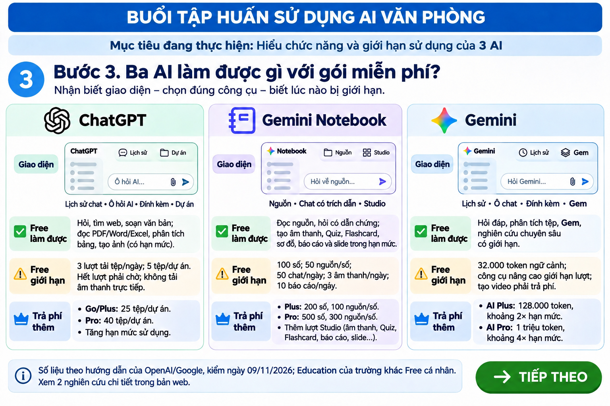
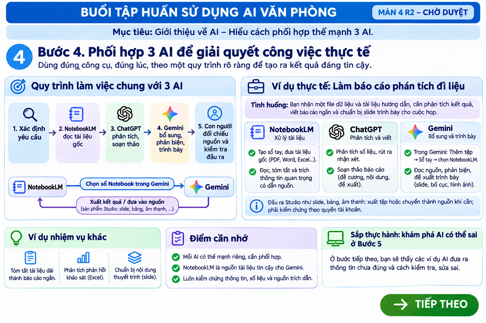

Bản tương tác cục bộ này không tự gửi nội dung tới CTEC, không điều khiển AI và không có quyền đánh dấu TECH_PASS, FILE_PASS, CLASS_PASS. Khi dùng máy chung, không lưu tên thật hoặc dữ liệu nhạy cảm.
Đăng nhập tài khoản Google muốn sử dụng lâu dài trên trình duyệt.

Xem ảnh Màn 3 đúng kích thước để đọc rõ số liệuHỏi, tìm web, soạn và phân tích trong hạn mức. Tải tệp Free bị giới hạn; Go/Plus/Pro tăng lượt và tính năng.
Đọc nguồn và trích dẫn, hỏi đáp theo sổ, tạo sản phẩm Studio khi có quyền. Gói cao hơn tăng hạn mức.
Hỏi đáp, nghiên cứu, thêm nguồn, Gem/Skills theo giao diện tài khoản. Gói trả phí có hạn mức và ngữ cảnh mở rộng.
Số liệu hạn mức trong ảnh là mốc nghiên cứu, có thể đổi theo thời điểm và tài khoản. Education của trường khác Free cá nhân; xem hạn mức thực trên tài khoản.

Mở đúng ảnh Màn 4 93D đã duyệt (xem đầy đủ)Điểm nối: Trong Gemini, khi có quyền, dùng Thêm tệp → Sổ tay → chọn sổ NotebookLM. Các sản phẩm Studio không mặc định tự chuyển hết; cần xuất hoặc đưa lại thành nguồn phù hợp.
Mục tiêu: Gửi cùng câu lệnh và quan sát AI có biết kiểm tra dữ liệu trước khi nhận xét hay không.
Trong NotebookLM: Tạo sổ → Thêm nguồn → Văn bản đã sao chép (Copied text) → dán đoạn nguồn ở nút dưới → sau đó dán câu lệnh chung vào Chat trong sổ.
Chọn kết quả quan sát được. Nếu bị chặn, ghi đúng là bị chặn; không chấm AI đúng hoặc sai.
Đáp án vẫn ẩn. Hãy thử cả ba công cụ.
AI đã kiểm thử thật: Gemini 3.5 Flash-Lite không đăng nhập từng dùng 91% sai; khi câu lệnh buộc cộng lại, cùng Gemini sửa thành 81%. ChatGPT Plus trong lần thử khác phát hiện 81% đúng. ChatGPT Free và NotebookLM với câu lệnh này chưa đủ bằng chứng để kết luận.
Nguyên tắc: Đúng nguồn → kiểm phép tính → đủ căn cứ → người dùng quyết định. Giới hạn gói Free có thể ảnh hưởng công cụ/hạn mức, nhưng chưa chứng minh gây lỗi 91% trong phép thử.
Bản tập huấn V6.8 xem trước. Sáu màn giới thiệu được phân biệt với 35 trạm/120 phút. Chưa nghiệm thu người học; website không thu thập mật khẩu/OTP và không tự xác nhận đăng nhập AI.